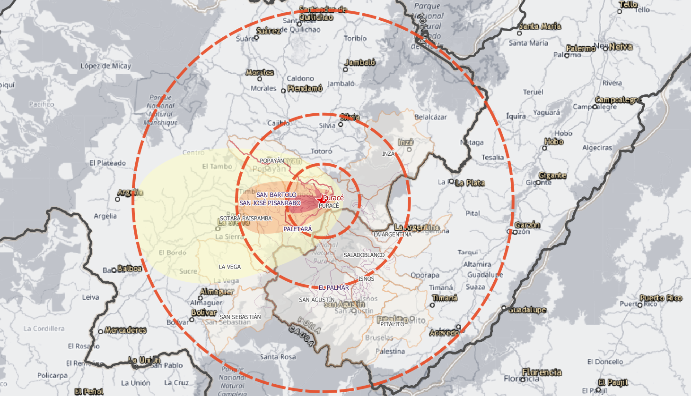

Plataforma geoespacial para gestión operativa del riesgo volcánico. Visualiza amenazas, vías, hidrografía, veredas, curvas de nivel y más en un mapa interactivo con datos oficiales del DANE, SGC y OSM.

Herramientas construidas para equipos de respuesta que necesitan información territorial clara, rápida y siempre disponible.
Un solo mapa con todas las capas relevantes para que cada actor vea lo mismo y actúe coordinado.
Vías DANE MGN categorizadas, caminos veredales e hidrografía para planear evacuaciones y logística.
Capas del DANE MGN 2025, SGC (amenaza volcánica) y fuentes abiertas, listas para consultar.
Datos GeoJSON servidos desde el mismo dominio. El navegador cachea las capas y permite consulta en campo.
Identifica zonas de amenaza alta/media/baja, territorios expuestos e infraestructura crítica en segundos.
Desde una vereda hasta 11 municipios y 2 departamentos. El mismo visor escala sin cambiar de herramienta.
13 capas en 4 grupos temáticos, estilizadas con fidelidad al proyecto QGIS master.
Un pipeline robusto que transforma datos oficiales en un visor web liviano, sin dependencias externas en producción.
Guías completas del proyecto QGIS, pipeline de datos y estructura del repositorio.